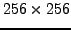

Gan_Image *pImage;
pImage = gan_image_alloc_gl_s ( 150, 100 );
This creates an image with dimensions 150 (height) by 100 (width).
The same operation using an image structure rather than a pointer would be
Gan_Image Image;
gan_image_form_gl_s ( &Image, 150, 100 );
To free the image, use
gan_image_free ( pImage ); /* OR */
gan_image_free ( &Image );
This function can be used universally to free a Gandalf image created in
any of the ways described here.
Sometimes the image data array is already present in memory, and we want to create a Gandalf image that points to the data. Let us assume that the data for a  pixel grey-level short integer image is available in an array asData. Assume for now that it is a contiguous array, stored with rows following rows consecutively without any gaps, i.e. an array of 65536 elements. Then to build a Gandalf image that points into this data we might use the code
short asData[65536];
/* ... set up array asData with image data ... */
pImage = gan_image_alloc_data_gl_s ( 256, 256, 256*sizeof(short),
asData, 65536, NULL, 0 ); /* OR */
gan_image_form_data_gl_s ( &Image, 256, 256, 256*sizeof(short),
asData, 65536, NULL, 0 );
After the height and width arguments is a ``stride'' argument, which indicates
the separation in memory between adjacent rows of the image, as stored in
the asData array. Here it is 256 pixels (the image width), but since
stride is measured in bytes, we need to multiply by the pixel size, as here.
The data array asData is passed in along with its size in pixels (65536).
The size is passed mainly as a means of error checking: if the requested
Gandalf image as defined by the height, width and stride were to exceed the
size of the data array, it would be an error, the Gandalf error handler
would be invoked, and NULL would be returned. Here the data array size
and the image size match exactly. The final two arguments allow the programmer
also to pass in an array of row pointers which point into the start
of each row of the image. Here we pass NULL for the row pointers, which
means that they will be allocated inside the function.
Note that the Gan_Image structure stores the information concerning which parts of the structure were dynamically allocated: the structure itself, the image data array and the row pointer array. gan_image_free() then knows which bits to free.
A slightly more complex example is when the rows of the image as stored in the data array are not contiguous in memory. This might happen for instance in frame-grabber (video) memory, where the hardware might restrict the stride to a fixed number of bytes, say 1024. We shall also provide an array of row pointers to the image creation function. Then we would have to call the above functions as follows:
short *psData, *apRowPointer[256];
/* ... set psData to point to video memory ... */
pImage = gan_image_alloc_data_gl_s ( 256, 256, 1024,
asData, 65536, apRowPointer, 256 ); /* OR */
gan_image_form_data_gl_s ( &Image, 256, 256, 256*sizeof(short),
asData, 131072, apRowPointer, 256 );
Here we assume that shorts are 2 bytes. These function calls will
set the Gandalf image to point directly into the video memory, so that
if desired the image stored may be copied for further processing (see below)
or processed directly.
For RGB unsigned character images, the function calls would be similar:
Gan_Image *pImage, Image;
Gan_RGBPixel_uc argbucData[65536];
pImage = gan_image_alloc_rgb_uc ( 150, 100 ); /* OR */
gan_image_form_rgb_uc ( &Image, 150, 100 ); /* OR */
/* ... set up array aucData with image data ... */
pImage = gan_image_alloc_data_rgb_uc ( 256, 256, 256*sizeof(unsigned char),
argbucData, 65536, NULL, 0 ); /* OR */
gan_image_form_data_rgb_uc ( &Image, 256, 256, 256*sizeof(unsigned char),
argbucData, 65536, NULL, 0 );
For RGB and other similar formats, Gandalf assumes that the channels for
each pixel are grouped in memory, so that a pixel can be represented as
a structure, rather than the channels being stored in separate arrays.
For RGB unsigned character images, the pixel structure is
Gan_RGBPixel_uc, as defined in <gandalf/image/pixel.h>:
/* Structure defining RGB colour unsigned character pixel
*/
typedef struct Gan_RGBPixel_uc
{
unsigned char R, G, B;
} Gan_RGBPixel_uc;
A different structure type is defined for each image format
(apart from grey-level) and type.
There are also higher level functions which create a Gandalf images using arguments to determine the format and type. Use these functions only if the format/type is determined at run-time. An example emulating the above examples for grey-level images is
Gan_Image *pImage, Image;
pImage = gan_image_alloc ( GAN_GREY_LEVEL_IMAGE, GAN_SHORT, 150, 100 ); /* OR */
gan_image_form ( &Image, GAN_GREY_LEVEL_IMAGE, GAN_SHORT, 150, 100 );
Error detection: All the above routines return NULL and invoke the Gandalf error handler if they fail. The most likely failure modes are failing to allocate the data required (i.e. internal malloc() or realloc() calls failing), or passing too small an array into the ..._alloc_data...() or ..._form_data...() routines.